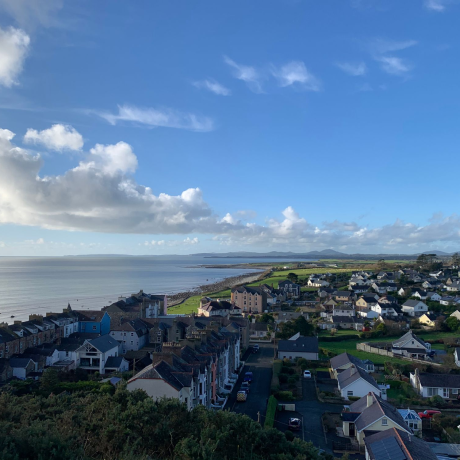
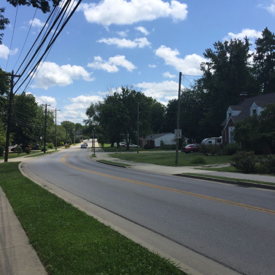
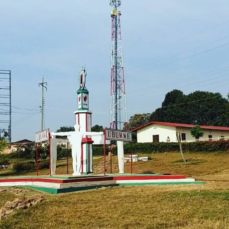

Uma jornada épica do Kentucky ao Burundi pelo País de Gales e
Ucrânia
Conheça um pouco mais sobre a localização dos seus amigos
Cada pessoa é um artista livre, chamado a transformar as condições,
pensamentos e estruturas que moldam nossas vidas.
— Joseph Beuys
A cidade de TripleTen reuniu profissionais de diversos cantos do
mundo. Hoje, a Galeria de Arte TripleTen tem o orgulho de apresentar
histórias e fotos de algumas das pessoas que dedicam seu tempo e
esforço para fazer com que os futuros profissionais de tecnologia
desta cidade se sintam em casa. Cada um de nós tem uma história
única sobre o lugar de onde viemos. Sinta-se à vontade para
adicionar sua própria história e uma obra de arte visual dedicada à
sua cidade natal à nossa coleção. Não importa de onde você é,
estamos felizes por você ser nosso vizinho.
Criccieth, País de Gales
ARTISTASSteffan Warren, editor-chefe
Kseniya Glagoleva, gerente de projeto

A ruína medieval do Castelo de Cricieth tem vista para a cidade
abaixo de uma rocha que se projeta para o mar. Acredita-se que
tenha sido construído por Llewelyn, o Grande, no século XIII.
Cerca de 900 anos depois, a auto-intitulada *Pérola de Gales nas
margens de Snowdonia* tornou-se um destino turístico popular
durante os meses de verão.
A uma curta caminhada da estrada do castelo, você pode desfrutar
do melhor sorvete do mundo no Cadwalader's, cujo ingrediente
secreto, segundo rumores, são algas marinhas de origem local.
Outra reivindicação à fama é o fato de que Criccieth ganhou o
prêmio *Wales in Bloom* por cinco anos consecutivos por suas
espetaculares exibições florais pela cidade. Foi também a casa
de David Lloyd George, o único galês a ocupar o cargo de
primeiro-ministro do Reino Unido.
Berea, EUA
ARTISTASTravis Turner, autor e editor

Berea é uma pequena cidade localizada na parte central do
Kentucky. A cidade é cercada por belas florestas e campos. É
conhecida como a capital do artesanato do estado, e os
visitantes encontrarão muitas oportunidades de compras: lojas
com bijuterias artesanais, velas, artigos de madeira, galerias,
ateliês de vidro e muito mais. A cidade realiza um festival
anual que celebra o "pão de colher", um prato local feito com
pão de milho e servido com uma colher de pau.
No entanto, provavelmente é mais conhecido pela faculdade local.
O Berea College foi fundado em 1855 e foi o primeiro colégio no
sul a ser racialmente integrado, bem como o primeiro a ser
misto. De forma um tanto singular, não cobra mensalidades - todo
aluno recebe uma bolsa de estudos integral.
Muramvya, Burundi
ARTISTASGrevisse Kenguruka, editor técnico

Muramvya é uma das 18 províncias de Burundi. Na era do reino,
Muramvya era a capital real e em 2007, por causa de sua paisagem
cultural e natural, foi adicionada à Lista Provisória do
Patrimônio Mundial da UNESCO. Está localizada no centro de
Burundi, entre as capitais políticas e econômicas do país.
O clima é bastante frio à noite, mas durante o dia, você
pensaria que está no céu. A 2.665 metros (8.743 pés) acima do
nível do mar, o Monte Teza é um dos lugares mais frios da
província. Mas essa brisa fresca permite uma das maiores
plantações de chá e café do país, que representam a maior parte
das exportações do Burundi.
O Parque Nacional de Kibira, uma das maiores reservas de vida
selvagem para macacos, se sobrepõe a quatro províncias,
incluindo Muramvya. Este Parque Nacional encontra-se no ápice
das belas montanhas do Congo-Nile Divide, variando entre 1.550 e
2.660 metros de altitude. Está repleta de uma bela vegetação e
fonte para os vários rios e riachos que fornecem água em todo o
país.